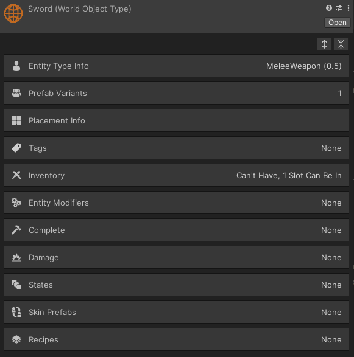
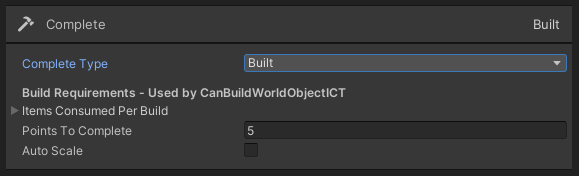
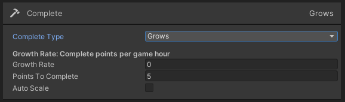
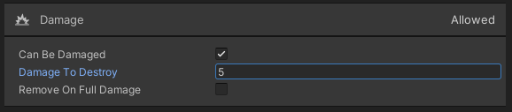
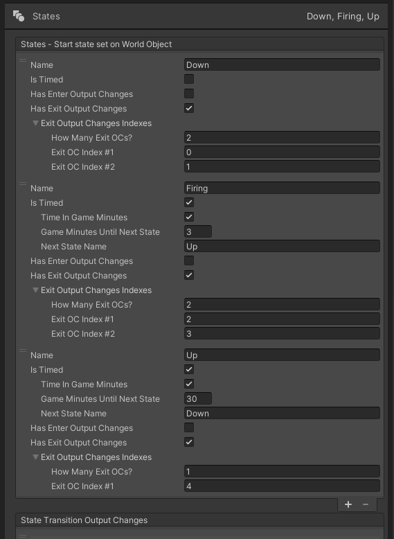
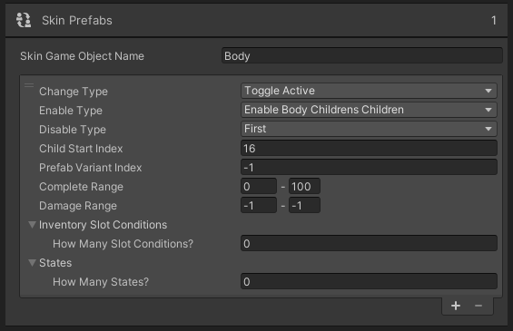
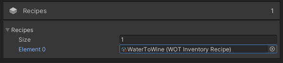

Components
ScriptableObjects
Plain C# Classes
WorldObjectType : EntityType : ScriptableObject
What is a World Object Type?
A World Object Type contains the main configuration for a World Object. It inherits from Entity Type which
is also the base class for Agent Type and Agent Event Type.
See World Object for more info.
World Object Type Custom Inspector

Entity Type Fields
See Entity Type for info on Entity Type Info, Prefab Variants, Placement Info, Tags, Inventory, and Entity Triggers.
Complete
Does this World Object grow or is it built?
 | Complete Type | None, Built, or Grows |
| Items Consumed Per Build |
Currently Not Implemented. |
| Growth Rate | How many game hours for one complete point? The length of a game hour is set in the Scene's TimeManager. |
| How many points are required to consider this World Object Completed? | |
| Auto Scale | The Game Object will be scaled in proportion to the complete percentage. At 100% the scale will be 1. |
Damage
Can this World Object be damaged?
| Can Be Damaged | A Bool indicated that this World Object can be damaged. |
| Damage To Destroy | How many points until the World Object is fully damaged? |
| Should the World Object's Game Object be destroyed when fully damaged? |
States
Does this World Object transition between states?
| States | Order of States does not matter. |
| Name | String name of state. Capitalization matters. |
| Is Timed | Does this state transition to a new state after X seconds/game minutes? |
| Has Enter Output Changes |
When entering this state should the selected Output Changes run? The OCs are below in the State Transition Output Changes and the indexing starts at 0. |
| Has Exit Output Changes |
When exiting this state should the selected Output Changes run? The OCs are below in the State Transition Output Changes and the indexing starts at 0. |
Output Changes |
A list of Ouput Changes that can be run when entering or exiting a state.
Slightly reduced set of options from the Mapping Type Output Changes. The
target is always Entity Target which is this World Object. Note: These OCs will be running on a World Object so the Agent will be null. Make sure the OCT can handle a null agent. |
Skin Prefabs
Does the appearance of this World Object change? The first skin prefab that matches the conditions will show so order matters.
| Skin Game Object Name |
The name of the Parent Game Object that holds the appearance Game Objects. |
| Change Type |
Replace Game Object: Removes child of Skin Game Object and replaces it with the selected Game Object. Toggle Active: Just toggles Active state of children. See Enable Type, Disable Type, and Child Start Index below. |
| Enable Type | Enables either the Skin Game Object's children or the children of their children. |
| Disable Type | None, First, Previous - Which of the Skin Game Object's children should be disabled? |
| Child Start Index |
What index to start at for enabling children? |
| Prefab Variant Index |
Should this skin prefab only be available to one Prefab Variant? -1 to ignore. Index starts at 0. |
| Complete Range | Certain number of complete points required? -1 to ignore. |
| Damage Range | Certain number of damage points required? -1 to ignore. |
Conditions |
List of Inventory Slot Conditions required to be in. Leave list empty to ignore. See Inventory Slot Condition. |
| States | List of States (See Section Above) required to be in. Leave list empty to ignore. |
Recipes
Can this World Object convert its inventory to new inventory?
|
A list of WOT Inventory Recipes.
See WOT Inventory Recipe. |